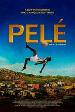

ფილმები
მხატვრული ფილმი — ისეთი ფილმი, რომელიც მაყურებელს უამბობს გამოგონილ ან ნახევრად გამოგონილ ამბავს. ასეთი ჟანრის ფილმებში დამაჯერებელი პერსონაჟები თუ მოვლენები მაყურებელს არწმუნებენ, რომ გამოგონილი ამბავი რეალურია. მხატვრული ფილმი ხასიათდება განათებისა და კამერის მოძრაობით, აგრეთვე სხვა კინემატოგრაფიული ელემენტებით. დეტალური ყურადღება ეთმობა სცენარსა თუ თხრობას, ვინაიდან ფილმები აგებულია სცენარებზე, რომლებიც მიზნად რეალიზმის შენარჩუნებას ისახავენ. მსახიობები გამოირჩევიან დიალოგებისა და მოქმედებების დამაჯერებელი გადმოცემით. ერთ-ერთ პირველ მხატვრულ ფილმად ითვლება ჟორჟ მელიესის „მოგზაურობა მთვარეზე“ (1902). [1]
ცნობილი ფილმების დიდი ნაწილი ჰოლივუდშია გადაღებული
ჰოლივუდი (ინგლ. Hollywood) — ლოს-ანჯელესის უბანი (კალიფორნია, აშშ), რომელიც დაუნტაუნის ჩრდილო-დასავლეთით მდებარეობს.[1] მისი სახელგანთქმულობისა და კულტურული იდენტურობის გამო კინო სტუდიებთან და ვარსკვლავებთან, სიტყვა „ჰოლივუდი“ ამერიკის კინო და სატელევიზიო ინდუსტრიასთან ასოცირდება. დღესდღეობით კინო ინდუსტრია გარშემო მდებარე ადგილებშია მიმოფანტული, როგორიცაა ბერბანკი და ვესტსაიდი, მაგრამ დამატებითი ინდუსტრიები (როგორიცაა სამონტაჟო, ეფექტების, პოსტ-წარმოების, და განათების კომპანიები) ჰოლივუდში რჩება. ჰოლივუდის ბევრი ისტორიული თეატრი საკონცერტო სცენებად და ძირითადი თეატრალური პრემიერებისთვის გამოიყენება, ისინი ასევე მასპინძლობს ხოლმე კინოაკადემიის დაჯილდოების ცერემონიას. იგი პოპულარული ტურისტული ღირსშესანიშნაობაა და მასთანაა განლაგებული სახელგანთქმული დიდების ხეივანი. იმისდა მიუხედავად, რომ ლოს-ანჯელესში არაა მიღებული რომელიმე უბნისთვის ან დასახლებისთვის საზღვრების დაადგენა, ჰოლივუდი აქ გამონაკლისია.
ექშენი

ექშენ ფილმი რომლის ნაწილიც საქართველოშია გადაღებული IMDB 7.0
WATCH HERE HOMEმეტი მსგავსი ფილმი
დრამა

ფილმი დრამის კატეგორიიდან IMDB 8.6
WATCH HERE HOMEმეტი მსგავსი ფილმი
სპორტული
ფილმი ფეხბურთის ლეგენდა პელეზე რომელიც აღწერს მის ცხოვრებას ფეხბურთელობამდე და დაწყების პორცესს IMDB 7.1
WATCH HERE HOMEმეტი მსგავსი ფილმი იხილეთ მეტი ფილმი